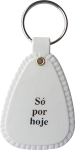

🦋🏳️⚧️✨ GRUPO TRANSCENDER NARCÓTICOS ANÔNIMOS ✨🏳️⚧️🦋 🔗 Link do Grupo Transcender no WhatsApp: https://chat.whatsapp.com/BNd0R3SvYSy0ysDapaeBxs?s=cl&p=i&mlu=4 🔗Link da Reunião no Zoom: https://us05web.zoom.us/j/5794524106?pwd=1LBbuRzFdPsYLTiqilBl5dRQbItU27.1 ID: 579 452 4106 Senha: 000000 💖 7ª Tradição: grupotranscenderna@gmail.com 📅 Reuniões todos os dias às 19h.
Agora é só registrar a ata no formulário do grupo.
📝 Preencher formulário da ataGrupo Transcender de Narcóticos Anônimos
Informe a data limpa para ver o tempo limpo e a ficha que a pessoa pode receber.
Alguém vai trocar de ficha hoje? De quanto tempo e quem vai entregar?
Grupo Transcender de Narcóticos Anônimos
Grupo Transcender de Narcóticos Anônimos
Grupo Transcender de Narcóticos Anônimos

Antes de iniciar a reunião, aperte F11 para usar a tela cheia.